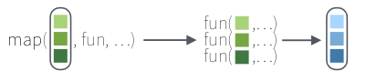
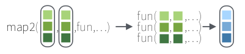
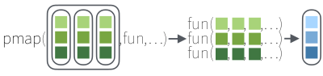
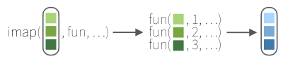

library (tidyverse)7 Programação Funcional com PURRR
7.1 EM CONSTRUÇÂO !!!!
7.2 Introdução
A seguir temos uma série de facildades que o pacote PURRR do R trás para trabalharmos com listas, funções e um paradigma de programação funcional.
Para saber mais sobre este pacote, acesse:
https://cran.r-project.org/package=purr.
Aviso
Para melhor utilizar este material, é importante que você tenha uma introdução à linguagem R e saiba carregar pacotes (packages) no R. Para mais informações acesse:
Para os exemplos, iremos carregar o seguinte pacote:
- tidyverse
7.2.1 Exemplos da Folha de Referência
A maioria dos exemplos, visam ajudar na interpretação dos exemplos e funções encontradas na Folha de Referência do purrr disponível no site do RStudio.
7.3 Programação Funcional
Programação funcional é um paradigma de programação onde aplicações são construídas aplicando uma composição de funções. Para tentar deixar este tema mais simplificado, imagine que você já está familiarizado com algumas funções do R e decide começar a utilizá-lo. Após um certo tempo, chegará a conclusão que muitas vezes ao trabalhar com dados, precisamos utilizar a mesma função com alguns parêmtros diferentes para concluirmos nossa análise.
Começando com um exemplo bem simples, digamos que precise da média e desvio padrão da variável peso (wt) da base de dados mtcars:
mtcarsPara isso poderíamos fazer:
mean (mtcars$wt)[1] 3.21725sd (mtcars$wt)[1] 0.9784574Depois, você acaba precisando da méida e desvio padrão para outra variável, digmos potencia (hp) e depois para consumo (mpg)..
mean (mtcars$hp)[1] 146.6875sd (mtcars$hp)[1] 68.56287mean (mtcars$mpg)[1] 20.09062sd (mtcars$mpg)[1] 6.026948Veja que com simples funções como estas, seu código vai ficando repetitivo e com várias replicações.
É exatamente para este e alguns outros desafios, que o pacote purr vem ajudar. Ele, entre outras coisas, ajuda na redução de linhas similares de código.
7.4 Mapeando funções
No pacote purrr, existem diversas funções que ajudam a mapear outras funções.
7.4.1 Uma lista
Seguindo o simples caso da média visto há pouco, poderíamos usar uma função de mapeamento (map) para aplicar as funções mean e sd para diversos items de uma lista e retornar um vetor de mesmo tamanho da lista.

Veja como ficaria:
#Cria uma lista para a entrada
lista <- list(wt=mtcars$wt, hp=mtcars$hp, mpg=mtcars$mpg)
#Cria um mapeamento da lista e a função que iremos executar para cada elementos da lista.
media <- map_dfr(lista, mean)
desv_padrao <- map(lista, sd)
bind_rows(media, desv_padrao) #Esta linha é apenas para agrupar em um data frame e mostrar a saída. O mapeamento já ocorreu nas linhas anteriores.Espero que até aqui já dê para ter uma idéia do poder do uso de funções mapeadas. Iremos ver agora diversos sabores desta idéia para apenas uma lista de entrada.
Para os próximos exemplos, iremos usar duas listas:
Listas x e l1:
x <- list(1:10, 11:20, 21:30)
x[[1]]
[1] 1 2 3 4 5 6 7 8 9 10
[[2]]
[1] 11 12 13 14 15 16 17 18 19 20
[[3]]
[1] 21 22 23 24 25 26 27 28 29 30l1 <- list(x = c("a", "b"), y = c("c", "d"))
l1$x
[1] "a" "b"
$y
[1] "c" "d"7.4.1.1 map
Use esta função para aplicar uma função em cada elemento da lista ou vetor de entrada e retornar uma lista.
É o que fizemos no exemplo anterior. Vejamos outro exemplo, agora com argumento para a função a ser chamada.
map(l1, sort, decreasing = TRUE)$x
[1] "b" "a"
$y
[1] "d" "c"Neste exemplo, aplicamos a função sort() para cada elemento da lista “l1”.
Passamos também o argumento decreasing = TRUE para a função sort().
Nota
Existem outras formas de declarar a função e passar os argumentos. As veremos mais adiante.
Podemos usar a função str() para ver a estrutura da lista. Veja:
str(l1)List of 2
$ x: chr [1:2] "a" "b"
$ y: chr [1:2] "c" "d"As funções a seguir, fazem praticamente a mesma coisa que a função map(), porém retornam, ao invés de uma lista, outro tipo de dados.
7.4.1.2 map_dbl
Use esta função para aplicar uma função em cada elemento da lista ou vetor de entrada e retornar um vetor de double.
map_dbl(x, mean)[1] 5.5 15.5 25.57.4.1.3 map_int
Use esta função para aplicar uma função em cada elemento da lista ou vetor de entrada e retornar um vetor de inteiro.
map_int(x,length)[1] 10 10 107.4.1.4 map_chr
Use esta função para aplicar uma função em cada elemento da lista ou vetor de entrada e retornar um vetor de caractere.
map_chr(l1, paste, collapse = "") x y
"ab" "cd" 7.4.1.5 map_lgl
Use esta função para aplicar uma função em cada elemento da lista ou vetor de entrada e retornar um vetor lógico.
map_lgl(x, is.integer)[1] TRUE TRUE TRUE7.4.1.6 map_dfc
Use esta função para aplicar uma função em cada elemento da lista ou vetor de entrada e retornar um dataframe juntando em colunas.
map_dfc(l1, rep, 3)Neste exemplo, aplicamos a função rep() para replicar em três vezes cada elemento da lista “l1” e retornar em um dataframe, juntando cada elemento em colunas.
7.4.1.7 map_dfr
Use esta função para aplicar uma função em cada elemento da lista ou vetor de entrada e retornar um dataframe juntando em linhas.
map_dfr(x, summary)7.4.1.8 walk
Use esta função para retornar a lista de entrada de forma silenciosa. Isto ajuda em situações com o pipe.
walk(x, print) [1] 1 2 3 4 5 6 7 8 9 10
[1] 11 12 13 14 15 16 17 18 19 20
[1] 21 22 23 24 25 26 27 28 29 307.4.2 Duas listas
O pacote purr tem um conjunto de funções similares ao map(), porém, ao invés de receber apenas uma única lista de entrada e retornar um vetor de mesmo tamanho, elas aceitam duas listas de entrada e retornam também um vetor de mesmo tamanho na saída.

Vamos criar nossas listas para os próximos exemplos:
Listas y, z e l2:
y <- list(1, 2, 3)
z <- list(4, 5, 6)
l2 <- list(x = "a", y = "z")map2
Use para aplicar uma função em um par de listas e retornar uma lista.
map2(x,y,rep)[[1]]
[1] 1 2 3 4 5 6 7 8 9 10
[[2]]
[1] 11 12 13 14 15 16 17 18 19 20 11 12 13 14 15 16 17 18 19 20
[[3]]
[1] 21 22 23 24 25 26 27 28 29 30 21 22 23 24 25 26 27 28 29 30 21 22 23 24 25
[26] 26 27 28 29 30Veja que neste exemplo, para cada elemento da lista “x”, aplicamos a função rep() para replicar em número de vezes cada elemento da lista “y”.
O purr possui uma sintaxe, onde ao invés de termos explicitamente o nome de uma função, podemos criá-la no momento do mapeamento. Isto é conhecido como função anônima. O símbol “~” é utilizado para estes casos. Os nomes das listas podem ser referenciados com um “.”. Veja o caso abaixo:
map2(x,y, ~ .x*.y)[[1]]
[1] 1 2 3 4 5 6 7 8 9 10
[[2]]
[1] 22 24 26 28 30 32 34 36 38 40
[[3]]
[1] 63 66 69 72 75 78 81 84 87 90Ao invés de usarmos uma função que multiplicasse dois números, simplesmente declaramos uma função anônima com o “~” e depois informamos o que esta função fará, neste caso, irá multiplicar “*” os elementos da lista “x” pelos da lista “y”.
7.4.2.1 map2_dbl
7.4.2.2 map2_int
7.4.2.3 map2_chr
7.4.2.4 map2_lgl
7.4.2.5 map2_dfc
7.4.2.6 map2_dfr
7.4.2.7 walk2
7.4.3 Várias listas
XXXX

7.4.4 Listas e índices
XXXX
